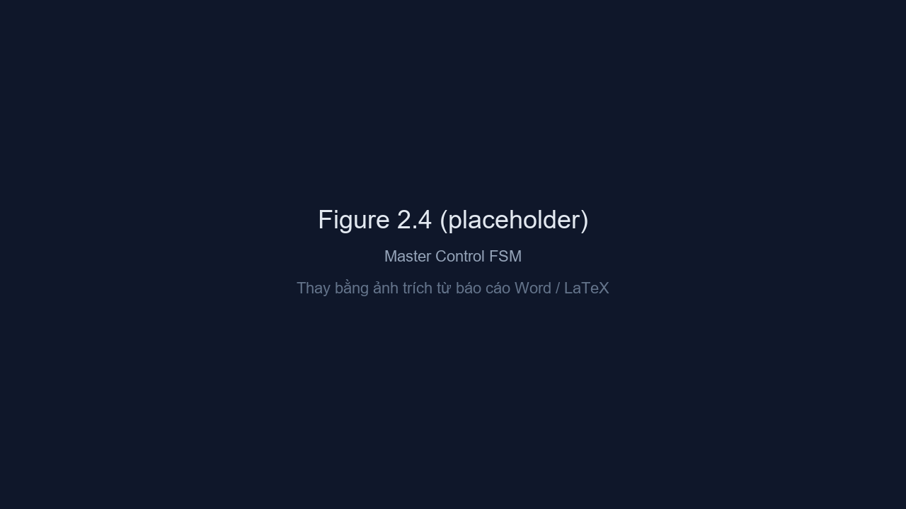

<div class="slide slide-container i2c-slide">
    <h1 class="gradient-text">Fig04 — I2C Master Control FSM</h1>
    <div class="i2c-fig">
        
        <p class="i2c-fig-caption">FSM <strong>mức byte</strong>: IDLE … DONE — bảng giải thích từng trạng thái ở slide tiếp theo.</p>
    </div>
</div>
